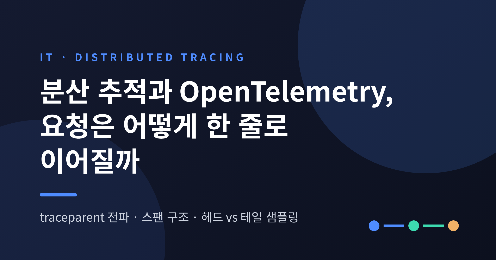
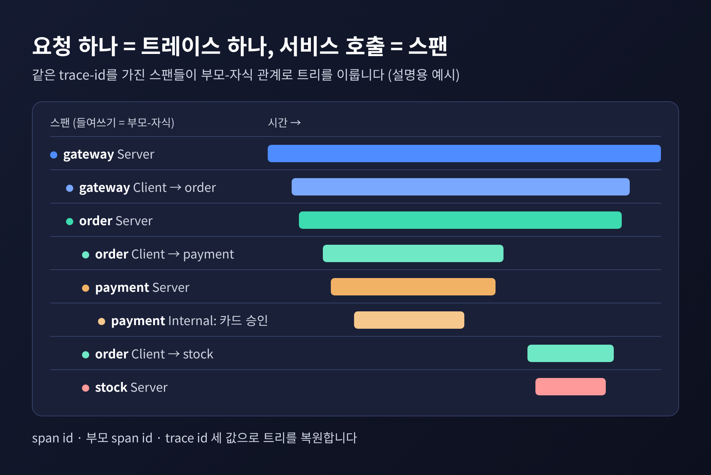
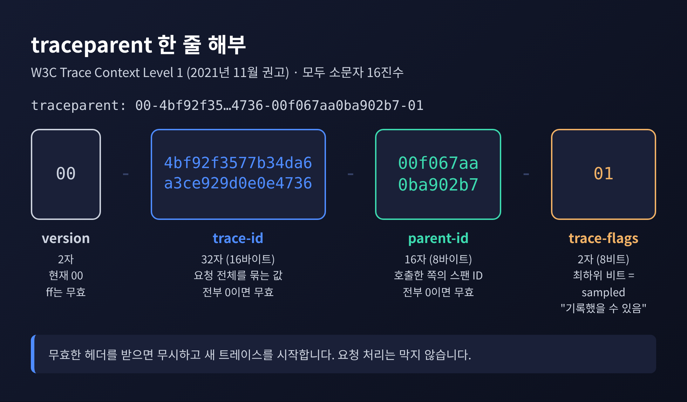
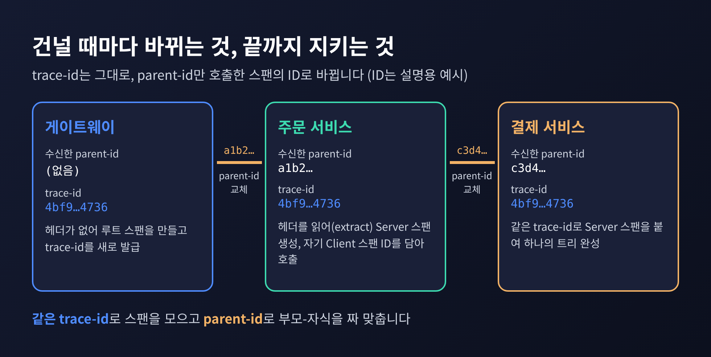
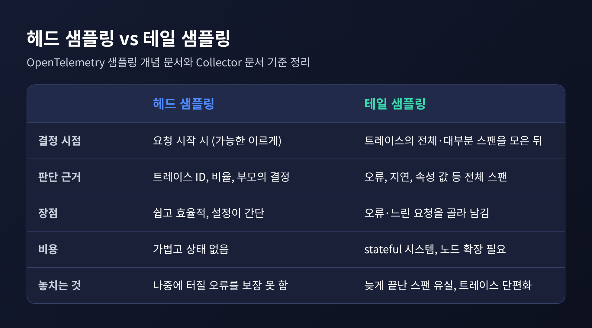
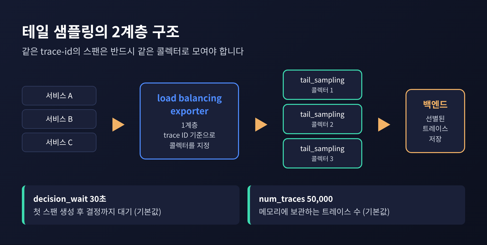
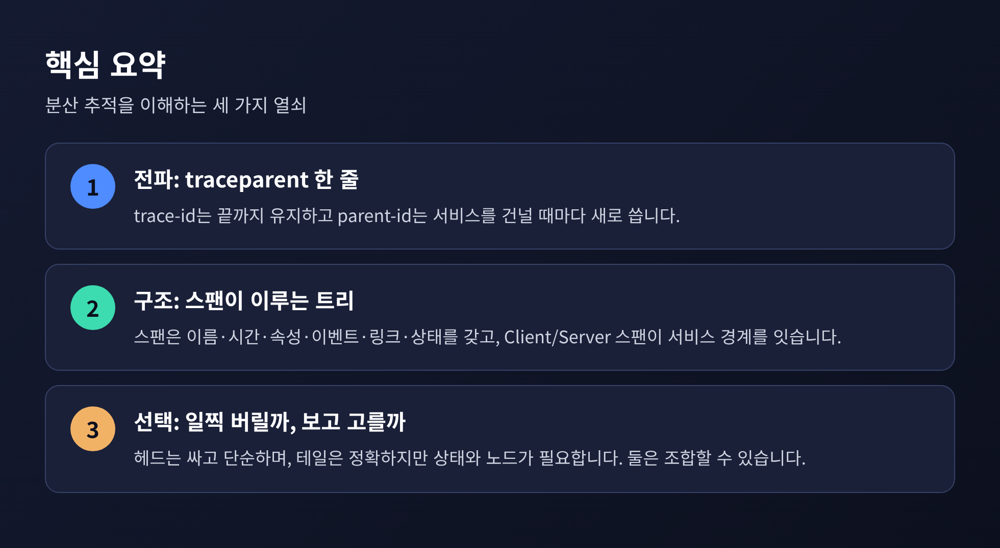

오늘은 분산 추적과 OpenTelemetry에 대해 이야기해 보려 합니다.
서비스가 여러 개를 지나는 요청을 한 줄로 이어 붙이는 열쇠는 traceparent라는 HTTP 헤더 하나입니다.
이 헤더가 무엇을 담고, 스팬이 어떻게 트리를 이루며, 어떤 요청을 남기고 버릴지 어떻게 정하는지를 차례로 정리해 보겠습니다.
주문 요청 하나가 게이트웨이, 주문 서비스, 결제 서비스, 재고 서비스를 차례로 지난다고 해 보겠습니다. 서비스마다 로그는 남습니다. 그러나 각 로그는 자기 서버 안의 사건일 뿐입니다. "결제 서비스의 3초짜리 응답이 어느 주문 요청 때문인가"라는 질문에는 로그만으로 답하기 어렵습니다.
이 문제를 일찍이 풀어낸 사례가 Google의 Dapper입니다. 2010년 논문에서 소개한 이 시스템은 요청 하나를 트리로 표현합니다. 트리의 노드는 스팬이고, 간선은 인과 관계입니다. 각 스팬은 자신의 span id, 부모의 span id, 그리고 요청 전체를 묶는 trace id를 갖습니다. 논문에 따르면 세 값 모두 확률적으로 유일한 64비트 정수입니다.
Dapper가 내건 목표도 눈여겨볼 만합니다. 어디서나 쓰이고, 항상 켜져 있고, 오버헤드가 낮고, 애플리케이션 개발자가 추적 코드를 쓰지 않아도 되어야 한다는 것이었습니다. 이를 위해 공용 RPC 라이브러리와 스레딩 라이브러리를 계측했고, 스레드에 연결해 둔 trace context를 비동기 콜백과 RPC를 넘어 운반했습니다. 지금 OpenTelemetry가 하는 일의 뼈대가 이미 이때 잡혀 있었던 셈입니다.

OpenTelemetry 문서가 정의하는 스팬은 다음 요소로 이루어집니다.
눈여겨볼 것은 span kind, 즉 스팬의 종류입니다. 동기 호출을 내보내는 쪽은 Client, 받는 쪽은 Server입니다. 프로세스 경계를 넘지 않는 작업은 Internal이고, 지정하지 않으면 이것이 기본입니다. 메시지 큐처럼 비동기로 일을 넘기는 경우에는 Producer와 Consumer가 짝을 이룹니다.
앞의 주문 예시로 돌아가 보겠습니다. 주문 서비스의 Server 스팬 안에서 결제 서비스를 부르면 Client 스팬이 하나 생기고, 결제 서비스에는 그 Client 스팬을 부모로 하는 Server 스팬이 생깁니다. 두 스팬을 이어 붙이는 정보가 바로 span context이고, 서비스 사이에서 직렬화되어 건너가는 것도 이 span context입니다.
한 가지 짚어 둘 점이 있습니다. 큐에 넣은 작업은 한참 뒤에 처리될 수 있어서 부모-자식으로 엮기 곤란한 경우가 있습니다. 이럴 때 쓰는 것이 스팬 링크입니다. 트리 대신 "이 스팬은 저 스팬에서 비롯되었다"라는 참조만 남기는 방식입니다.
서비스 사이에서 컨텍스트를 실어 나르는 표준이 W3C Trace Context입니다. 2021년 11월 23일 W3C 권고(Recommendation)가 되었고, OpenTelemetry의 기본 전파기도 이 헤더를 씁니다. 형식은 다음과 같습니다.
traceparent: 00-4bf92f3577b34da6a3ce929d0e0e4736-00f067aa0ba902b7-01
대시로 네 칸을 나눕니다. 모두 소문자 16진수입니다.
00이며 ff는 무효입니다.
여기서 sampled 플래그의 표현이 흥미롭습니다. 규격은 이 비트를 "호출자가 트레이스 데이터를 기록했을 수 있음"이라고 설명합니다. 명령이 아니라 알림에 가깝습니다. 받는 쪽이 이 힌트를 따를지는 샘플러 설정에 달려 있습니다.
헤더가 망가졌을 때의 규칙도 단순합니다. trace-id나 parent-id가 무효이면 수신자는 traceparent를 무시하고 새 트레이스를 시작합니다. 모르는 상위 버전이 오면 알 수 없는 필드를 해석하지 않고 version 00으로 새 헤더를 만들어 이어 갑니다. 추적이 잘못된 헤더 하나 때문에 요청 처리를 막지 않으려는 설계로 읽힙니다.
별도 헤더인 tracestate는 벤더별 정보를 운반합니다. 리스트 멤버는 최대 32개이고, 길이 한도 때문에 잘라야 할 때는 128자를 넘는 항목부터 통째로 지웁니다.
Level 2 초안(2024년 3월 28일자 후보 권고 초안)에는 trace-flags의 두 번째 비트로 random-trace-id 플래그가 추가되었습니다. 이 플래그가 켜져 있으면 trace-id의 오른쪽 7바이트 이상이 균등 분포의 무작위 값이라는 뜻입니다. 뒤에서 볼 확률 샘플링이 trace-id를 난수원으로 쓰기 때문에 이 약속이 의미를 갖습니다. 다만 Level 2는 제가 확인한 시점에는 최종 권고가 아니었다는 점을 밝혀 둡니다.
OpenTelemetry 문서는 컨텍스트와 전파를 구분합니다. 컨텍스트는 trace ID, span ID처럼 송신자와 수신자가 공유해야 하는 정보를 담은 객체이고, 전파는 그것을 서비스와 프로세스 사이로 옮기는 장치입니다. 송신 쪽은 컨텍스트를 직렬화해 요청 헤더에 쓰고(inject), 수신 쪽은 헤더에서 읽어 복원합니다(extract).
호출 흐름을 따라가 보겠습니다. 아래 ID는 설명용 예시입니다.
traceparent를 보냅니다.
정리하면 trace-id는 끝까지 변하지 않고, parent-id는 한 번 건널 때마다 바뀝니다. 한 줄로 이어 붙인다는 말의 실체가 이것입니다. 같은 trace-id로 스팬을 모으고, parent-id로 부모-자식 관계를 짜 맞추면 앞에서 본 트리가 복원됩니다.
OpenTelemetry는 여기에 baggage라는 장치도 둡니다. 임의의 키-값 쌍을 요청과 함께 전파하는 기능인데, 서비스 경계를 넘어 그대로 전송되므로 민감한 정보를 넣지 말라고 문서가 경고합니다. 한계도 있습니다. 헤더 전파는 모든 중간 계층이 헤더를 그대로 넘겨 주어야 성립합니다. 헤더를 지우는 프록시나 계측하지 않은 서비스가 끼어 있으면, 그 지점에서 트레이스가 끊어져 새 트레이스로 갈라집니다.
모든 요청을 추적하면 비용이 만만치 않습니다. Dapper조차 처음에는 균일 샘플링으로, 후보 1,024개당 트레이스 하나꼴(약 0.1%)을 남겼습니다. 이후 단위 시간당 목표 개수를 맞추는 적응형 샘플링으로 바꿨고, 트래픽이 큰 일부 서비스는 0.01%까지 낮췄습니다. 반대로 초당 수십 요청 수준의 서비스는 전부 추적할 수 있었습니다.
헤드 샘플링은 이처럼 가능한 한 이른 시점에, 트레이스 전체를 보지 않고 결정하는 방식입니다. OpenTelemetry 문서는 이해하기 쉽고 설정이 간단하며 효율적이라는 점을 장점으로 꼽습니다.
OpenTelemetry SDK의 기본 샘플러는 ParentBased(root=AlwaysOn)입니다. 루트 스팬은 항상 기록하고, 부모가 있으면 부모의 결정을 따릅니다. 원격 부모가 sampled이면 AlwaysOn, 아니면 AlwaysOff가 기본 위임 대상입니다. 첫 서비스가 내린 결정이 traceparent의 sampled 비트를 타고 하류로 퍼지니, 한 트레이스는 전부 남거나 전부 사라집니다.
비율로 줄이고 싶다면 트레이스 ID를 이용해 결정론적으로 판단하는 방식을 씁니다. 같은 trace-id에는 어느 서비스가 계산해도 같은 결과가 나오므로 트레이스가 반쪽이 되지 않습니다. 현재 개발 중인 확률 샘플링 스펙은 이를 한층 정교하게 만들어, 각 서비스가 공유 난수값 R을 임계값 T와 비교하게 합니다. R이 T 이상이면 보존하고, 1% 샘플링은 ot=th:fd70a4로 표기합니다. 이 스펙은 아직 Development 상태이므로 변경될 수 있습니다.
그러나 헤드 샘플링에는 분명한 한계가 있습니다. 요청이 아직 시작 단계일 때 정하므로 나중에 오류가 날지, 느려질지 알 수 없습니다. 문서의 표현대로 오류가 있는 트레이스를 전부 남기겠다는 보장은 할 수 없습니다.
테일 샘플링은 트레이스의 전체 또는 대부분의 스팬을 모은 뒤 결정합니다. 오류가 있는 트레이스는 항상 남기고, 전체 지연이 기준을 넘으면 남기고, 특정 속성을 가진 것만 더 남기는 식의 정책을 쓸 수 있습니다. 예전에는 무작위로 뽑은 트레이스에서 문제의 흔적을 운 좋게 찾기를 기대했다면, 이제는 문제가 있는 트레이스를 골라서 남길 수 있게 된 것입니다.
OpenTelemetry Collector의 tail_sampling 프로세서는 이를 위해 latency, status_code, probabilistic, string_attribute, rate_limiting, composite 같은 정책 유형을 제공합니다. 기본값은 두 가지를 알아 두면 됩니다.

까다로운 점은 구조에서 나옵니다. 한 트레이스의 모든 스팬이 같은 콜렉터 인스턴스에 도착해야 하기 때문입니다. 서비스마다 스팬을 따로 보내는데 콜렉터가 여러 대라면 한 트레이스가 여러 대에 흩어집니다. 이를 막기 위해 첫 번째 계층에 load balancing exporter를 두어 trace ID 기준으로 같은 콜렉터에 보내고, 두 번째 계층에서 tail sampling을 수행하는 2계층 구성을 권합니다. 장애 격리를 위해 두 계층은 분리해 두라고 안내합니다.
비용도 있습니다. 공식 문서는 구현 컴포넌트가 대량의 데이터를 받아 저장하는 상태 유지 시스템이어야 하고, 트래픽에 따라 수십에서 수백 노드가 필요할 수 있다고 설명합니다. 따라가지 못하면 더 가벼운 기법으로 후퇴해야 하므로 자원 모니터링이 필수입니다. decision_wait 시간 창을 벗어나 늦게 끝나는 스팬은 유실될 수 있고, 그러면 구멍 난 트레이스가 남습니다. 지연을 기준으로 삼는 정책은 네트워크가 막히는 장애 때 오히려 비용을 갑자기 키울 수도 있습니다. 또한 문서는 테일 샘플러가 벤더 종속적인 기술로 흘러가기 쉽다고 지적합니다.
두 방식을 나란히 놓으면 이렇습니다.

정답은 둘 중 하나가 아니라 조합입니다. 볼륨이 아주 큰 환경에서는 헤드 샘플링으로 파이프라인의 과부하를 먼저 막고, 내보내기 전에 테일 샘플링을 거는 구성이 문서에 소개되어 있습니다. 다만 한 가지 주의할 점이 있습니다. 헤드 단계에서 버려진 트레이스는 테일 단계에서 아무리 정교한 정책을 걸어도 볼 수 없습니다. 2022년 OpenTelemetry 블로그가 테일 샘플링을 쓸 때 SDK 쪽에는 기본 샘플러나 AlwaysOn을 두어 모든 스팬이 수집되게 하라고 안내한 이유입니다. 두 자료를 겹쳐 읽으면, 헤드 비율을 낮출수록 테일의 선별력도 함께 줄어든다는 결론에 이릅니다.
시작하시는 분이라면 이렇게 접근해 보시길 권합니다. 트래픽이 적을 때는 전부 기록하거나 단순한 비율 샘플링으로 충분합니다. 오류와 느린 요청을 반드시 남겨야 하는 시점이 오면 그때 테일 샘플링과 2계층 콜렉터를 검토하셔도 늦지 않습니다. 다만 위에서 인용한 수치는 대부분 공식 문서의 기본값이므로, 실제 환경에서는 트래픽과 메모리에 맞춰 직접 측정하고 조정하셔야 합니다.

정리하면 이렇습니다.
분산 추적은 마법이 아니라 약속입니다. 요청이 서비스를 건널 때마다 trace-id는 지키고 parent-id는 새로 쓰기로 한 약속이고, 그 약속을 traceparent 한 줄이 실어 나릅니다.
헤드냐 테일이냐는 그 위에서 무엇을 버릴지 고르는 문제입니다. 일찍 정하면 싸고 단순하지만 놓치는 것이 있고, 늦게 정하면 정확하지만 값을 치러야 합니다. 다음에 장애 대시보드에서 느린 요청 하나를 열어 보실 때, 그 한 줄이 서비스 몇 개를 건너왔는지 떠올려 보시면 좋겠습니다. 막막하던 장애 원인이 훨씬 선명하게 보일 것입니다.